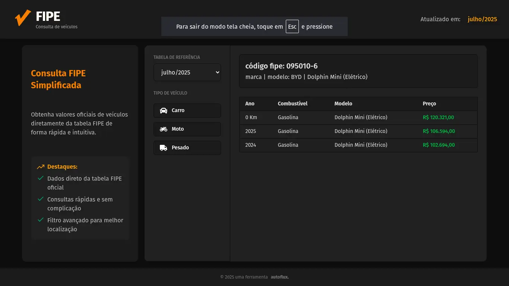

V Fipe
Consulta rápida e precisa de valores de veículos usando dados oficiais da Tabela FIPE.
Consulta rápida e precisa de valores de veículos usando dados oficiais da Tabela FIPE.
Gere documentos personalizados em massa a partir de modelos Word e dados de planilhas Excel.
Prepare arquivos para envio de telegramas no sistema dos Correios de forma rápida e eficiente.
Nossas soluções são desenvolvidas para otimizar seu fluxo de trabalho, eliminando tarefas repetitivas e reduzindo erros manuais.
Automatize processos demorados e ganhe tempo para o que realmente importa.
Resultados precisos e consistentes em todas as execuções.
Compatível com os formatos e sistemas que você já utiliza.